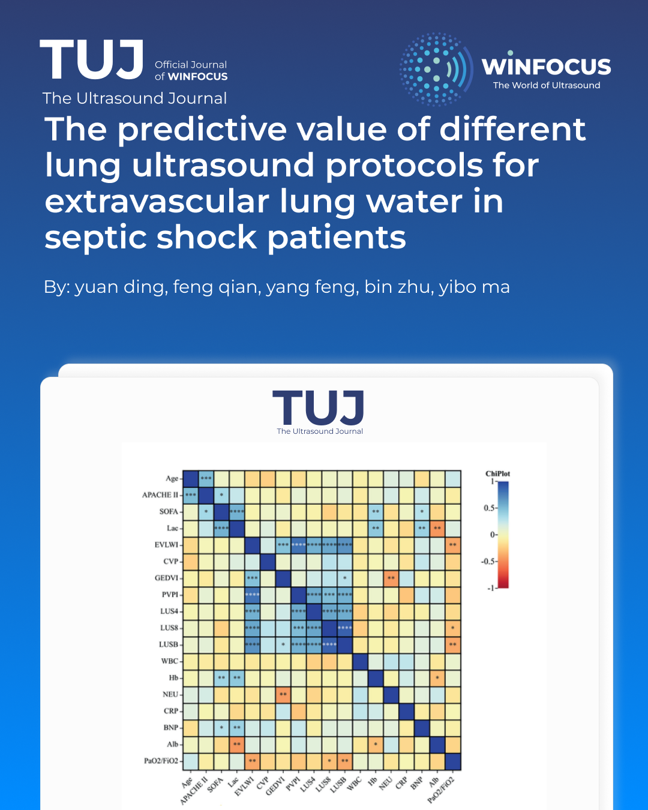

The predictive value of different lung ultrasound protocols for extravascular lung water in septic shock patients
Keywords:
Septic shock, Extravascular pulmonary water index, Pulmonary edema, Lung ultrasoundAbstract
Background: Currently, the role of lung ultrasound (LUS) in the diagnosis and treatment of patients with septic shock is widely recognized. Various LUS protocols and scoring criteria have been proposed, yet a unified LUS protocol for assessing lung water in these patients remains lacking.
Methods: Forty‑six septic shock patients underwent LUS with three scanning schemes (4‑region, 8‑region, BLUE) alongside pulse indicated continuous cardiac output (PiCCO) monitoring. Spearman correlation analysis was used to compare the correlation between the three ultrasound scoring schemes, PiCCO and other clinical laboratory indicators. At the same time, the value of three LUS protocols for assessing pulmonary water in septic shock patients was evaluated using receiver operating characteristic (ROC) analysis.
Results: Spearman's correlation analysis showed a significant correlation between extravascular lung water index (EVLWI) and 4-region, 8-region, or the Bedside Lung Ultrasound Examination (BLUE) protocol. More importantly, the BLUE protocol showed a stronger correlation with EVLWI than the 4-region protocol and the 8-region protocol (r=0.634, 0.458, 0.546, p<0.001). The ROC curve analysis showed that ultrasound protocols could predict the early occurrence of pulmonary edema in septic shock patients (EVLWI>7 ml/kg), diagnosis of pulmonary edema (EVLWI>10 ml/kg), and evaluation of pulmonary fluid severity (EVLWI≥15 ml/kg).
Conclusions: Our study found that septic shock patients were prone to pulmonary edema during fluid resuscitation, and ultrasound scoring could help us quantify pulmonary edema. Among the 4-region, 8-region and BLUE protocols, the BLUE protocol shows relatively better overall performance in predicting lung water elevation and evaluating edema severity.
References
1. Singer M, Deutschman CS, Seymour CW, Shankar-Hari M, Annane D, Bauer M, et al. The third international consensus definitions for sepsis and septic shock (Sepsis-3). JAMA 2016;315:801-10. doi: 10.1001/jama.2016.0287.
2. Fleischmann-Struzek C, Mellhammar L, Rose N, Cassini A, Rudd KE, Schlattmann P, et al. Incidence and mortality of hospital- and ICU-treated sepsis: results from an updated and expanded systematic review and meta-analysis. Intensive Care Med 2020;46:1552-62. doi: 10.1007/s00134-020-06151-x.
3. Evans L, Rhodes A, Alhazzani W, Antonelli M, Coopersmith CM, French C, et al. Surviving sepsis campaign: international guidelines for management of sepsis and septic shock 2021. Intensive Care Med 2021;47:1181-247. doi: 10.1007/s00134-021-06506-y.
4. Adamantos S. Fluid therapy in pulmonary disease: how careful do we need to be? Front Vet Sci 2021;8:624833. doi: 10.3389/fvets.2021.624833.
5. Jaffee W, Hodgins S, McGee WT. Tissue edema, fluid balance, and patient outcomes in severe sepsis: an organ systems review. J Intensive Care Med 2018;33:502-9. doi: 10.1177/0885066617742832.
6. Su CH, Liu SH, Tan TH, Lo CH. Using the pulse contour method to measure the changes in stroke volume during a passive leg raising test. Sensors (Basel) 2018;18:3420. doi: 10.3390/s18103420.
7. Khajehpour H, Behzadnia MJ. The role of internal jugular vein Doppler ultrasonography in predicting hypovolemic shock in polytrauma patients. Ultrasonography 2022;41:317-24. doi: 10.14366/usg.21144.
8. Hu X, Li L, Hao X, Niu N, Tang Y. Passive leg raising combined with echocardiography could evaluate volume responsiveness in patients with septic shock. Zhonghua Wei Zhong Bing Ji Jiu Yi Xue 2019;31:619-22. doi: 10.3760/cma.j.issn.2095-4352.2019.05.019.
9. Assaad S, Kratzert WB, Shelley B, Friedman MB, Perrino A. Assessment of pulmonary edema: principles and practice. J Cardiothorac Vasc Anesth 2018;32:901-14. doi: 10.1053/j.jvca.2017.08.028.
10. Wang Y, Shen Z, Lu X, Zhen Y, Li H. Sensitivity and specificity of ultrasound for the diagnosis of acute pulmonary edema: a systematic review and meta-analysis. Med Ultrason 2018;20:32-6. doi: 10.11152/mu-1223.
11. Zhang F, Li C, Zhang JN, Guo HP, Wu DW. Comparison of quantitative computed tomography analysis and single-indicator thermodilution to measure pulmonary edema in patients with acute respiratory distress syndrome. Biomed Eng Online 2014;13:30. doi: 10.1186/1475-925X-13-30.
12. Siegenthaler N, Giraud R, Saxer T, Courvoisier DS, Romand JA, Bendjelid K. Haemodynamic monitoring in the intensive care unit: results from a web-based Swiss survey. Biomed Res Int 2014;2014:129593. doi: 10.1155/2014/129593.
13. Gassanov N, Caglayan E, Nia A, Erdmann E, Er F. Hämodynamisches monitoring auf der Intensivstation: Pulmonalarterienkatheter versus PiCCO. Dtsch Med Wochenschr 2011;136:376-80. doi: 10.1055/s-0031-1272539.
14. Allinovi M, Parise A, Giacalone M, Amerio A, Delsante M, Odone A, et al. Lung ultrasound may support diagnosis and monitoring of COVID-19 pneumonia. Ultrasound Med Biol 2020;46:2908-17. doi:10.1016/j.ultrasmedbio.2020.07.018.
15. Peng QY, Wang XT, Zhang LN. Findings of lung ultrasonography of novel corona virus pneumonia during the 2019-2020 epidemic. Intensive Care Med 2020;46:849-50. doi: 10.1007/s00134-020-05996-6.
16. Koenig S, Mayo P, Volpicelli G, Millington SJ. Lung ultrasound scanning for respiratory failure in acutely ill patients: a review. Chest 2020;158:2511-6. doi: 10.1016/j.chest.2020.08.2052.
17. Lajili F, Toumia M, Sekma A, Bel Haj Ali K, Sassi S, Zorgati A, et al. Value of lung ultrasound sonography B-lines quantification as a marker of heart failure in COPD exacerbation. Int J Chron Obstruct Pulmon Dis 2024;19:1767-1774. doi: 10.2147/COPD.S447819.
18. Enghard P, Rademacher S, Nee J, Hasper D, Engert U, Jörres A, et al. Simplified lung ultrasound protocol shows excellent prediction of extravascular lung water in ventilated intensive care patients. Crit Care 2015;19:36. doi: 10.1186/s13054-015-0756-5.
19. Zhao Z, Jiang L, Xi X, Jiang Q, Zhu B, Wang M, et al. Prognostic value of extravascular lung water assessed with lung ultrasound score by chest sonography in patients with acute respiratory distress syndrome. BMC Pulm Med 2015;15:98. doi: 0.1186/s12890-015-0091-2.
20. Mayr U, Lukas M, Habenicht L, Wiessner J, Heilmaier M, Ulrich J, et al. B-lines scores derived from lung ultrasound provide accurate prediction of extravascular lung water index: an observational study in critically ill patients. J Intensive Care Med 2022;37:21-31. doi: 10.1177/0885066620967655.
21. Liteplo AS, Marill KA, Villen T, Miller RM, Murray AF, Croft PE, et al. Emergency thoracic ultrasound in the differentiation of the etiology of shortness of breath (ETUDES): sonographic B-lines and N-terminal pro-brain-type natriuretic peptide in diagnosing congestive heart failure. Acad Emerg Med 2009;16:201-10. doi: 10.1111/j.1553-2712.2009.00347.x.
22. Eichhorn V, Goepfert MS, Eulenburg C, Malbrain ML, Reuter DA. Comparison of values in critically ill patients for global end-diastolic volume and extravascular lung water measured by transcardiopulmonary thermodilution: a meta-analysis of the literature. Med Intensiva 2012;36:467-74. doi: 10.1016/j.medin.2011.11.014.
23. Kushimoto S, Taira Y, Kitazawa Y, Okuchi K, Sakamoto T, Ishikura H, et al. The clinical usefulness of extravascular lung water and pulmonary vascular permeability index to diagnose and characterize pulmonary edema: a prospective multicenter study on the quantitative differential diagnostic definition for acute lung injury/acute respiratory distress syndrome. Crit Care 2012;16:R232. doi: 10.1186/cc11898.
24. Tagami T, Kushimoto S, Yamamoto Y, Atsumi T, Tosa R, Matsuda K, et al. Validation of extravascular lung water measurement by single transpulmonary thermodilution: human autopsy study. Crit Care 2010;14:R162. doi: 10.1186/cc9250.
25. Lichtenstein DA, Mezière GA. Relevance of lung ultrasound in the diagnosis of acute respiratory failure: the BLUE protocol. Chest 2008;134:117-25. doi: 10.1378/chest.07-2800.
26. Kelm DJ, Perrin JT, Cartin-Ceba R, Gajic O, Schenck L, Kennedy CC. Fluid overload in patients with severe sepsis and septic shock treated with early goal-directed therapy is associated with increased acute need for fluid-related medical interventions and hospital death. Shock 2015;43:68-73. doi: 10.1097/SHK.0000000000000268.
27. Malbrain ML, Marik PE, Witters I, Cordemans C, Kirkpatrick AW, Roberts DJ, et al. Fluid overload, de-resuscitation, and outcomes in critically ill or injured patients: a systematic review with suggestions for clinical practice. Anaesthesiol Intensive Ther 2014;46:361-80. doi: 10.5603/AIT.2014.0060.
28. Loflin R, Winters ME. Fluid resuscitation in severe sepsis. Emerg Med Clin North Am 2017;35:59-74. doi: 10.1016/j.emc.2016.08.001.
29. Rivers E, Nguyen B, Havstad S, Ressler J, Muzzin A, Knoblich B, et al. Early goal-directed therapy in the treatment of severe sepsis and septic shock. N Engl J Med 2001;345:1368-77. doi: 10.1056/NEJMoa010307.
30. Levy MM, Evans LE, Rhodes A. The surviving sepsis campaign bundle: 2018 update. Intensive Care Med 2018;44:925-8. doi: 10.1007/s00134-018-5085-0.
31. Pinsky MR, Cecconi M, Chew MS, De Backer D, Douglas I, Edwards M, et al. Effective hemodynamic monitoring. Crit Care 2022;26:294. doi: 10.1186/s13054-022-04173-z.
32. Mingoia A, Wittebole X, Gérard L. Diagnosis of middle lobe atelectasis with lung ultrasonography. Intensive Care Med 2021;47:906-7. doi: 10.1007/s00134-021-06421-2.
33. Heldeweg MLA, Haaksma ME, Smit JM, Smit MR, Tuinman PR. Lung ultrasound to discriminate non-cardiogenic interstitial syndrome from cardiogenic pulmonary edema: is “gestalt” as good as it gets? J Crit Care 2023;73:154180. doi: 10.1016/j.jcrc.2022.154180.
34. Anile A, Russo J, Castiglione G, Volpicelli G. A simplified lung ultrasound approach to detect increased extravascular lung water in critically ill patients. Crit Ultrasound J 2017;9:13. doi: 10.1186/s13089-017-0068-x.
35. Haaksma ME, Smit JM, Heldeweg MLA, Pisani L, Elbers P, Tuinman PR. Lung ultrasound and B-lines: B careful! Intensive Care Med 2020;46:544-5. doi: 10.1007/s00134-019-05911-8.
36. Corradi F, Ball L, Brusasco C, Riccio AM, Baroffio M, Bovio G, et al. Assessment of extravascular lung water by quantitative ultrasound and CT in isolated bovine lung. Respir Physiol Neurobiol 2013;187:244-9. doi: 10.1016/j.resp.2013.04.002.
37. Corradi F, Brusasco C, Vezzani A, Santori G, Manca T, Ball L, et al. Computer-aided quantitative ultrasonography for detection of pulmonary edema in mechanically ventilated cardiac surgery patients. Chest 2016;150:640-51. doi: 10.1016/j.chest.2016.04.013.
38. Corradi F, Brusasco C, Pelosi P. Chest ultrasound in acute respiratory distress syndrome. Curr Opin Crit Care 2014;20:98-103. doi: 10.1097/MCC.0000000000000042.
39. Luecke T, Corradi F, Pelosi P. Lung imaging for titration of mechanical ventilation. Curr Opin Anaesthesiol 2012;25:131-40. doi: 10.1097/ACO.0b013e32835003fb.
40. Corradi F, Via G, Forfori F, Brusasco C, Tavazzi G. Lung ultrasound and B-lines quantification inaccuracy: B sure to have the right solution. Intensive Care Med 2020;46:1081-3. doi: 10.1007/s00134-020-06005-6.
41. Brusasco C, Santori G, Tavazzi G, Via G, Robba C, Gargani L, et al. Second-order grey-scale texture analysis of pleural ultrasound images to differentiate acute respiratory distress syndrome and cardiogenic pulmonary edema. J Clin Monit Comput 2022;36:131-40. doi: 10.1007/s10877-020-00629-1.

Downloads
Published
Issue
Section
License
Copyright (c) 2026 Yuan Ding, Feng Qian, Yang Feng, Bin Zhu, Yibo Ma (Author)

This work is licensed under a Creative Commons Attribution-NonCommercial 4.0 International License.
This is an Open Access article distributed under the terms of the Creative Commons Attribution License (https://creativecommons.org/licenses/by-nc/4.0) which permits unrestricted use, distribution, and reproduction in any medium, provided the original work is properly cited.
Authors retain the copyright for their published work. No formal permission will be required to reproduce parts (tables or illustrations) of published papers, provided the source is quoted appropriately and reproduction has no commercial intent.
How to Cite